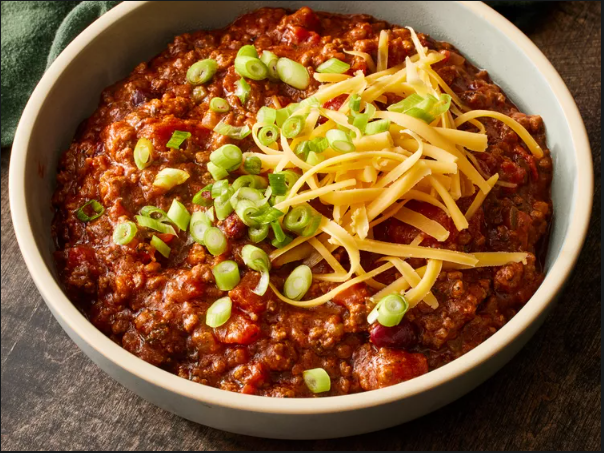

Award Winning Chili Con Carne

Description
This chili con carne recipe is many years in the making, and I have won several awards with it. I think you'll be pleased with it. You can alter it to your own spice levels to achieve your perfect chili. Garnish with shredded mozzarella cheese and use corn chips for dipping.
Ingredients
- 5 tablespoons vegetable oil
- 2 large onions, chopped
- 1 chile pepper, chopped
- 5 cloves garlic, chopped
- 2 pounds lean ground beef
- 3 (14.5 ounce) cans whole peeled tomatoes with liquid, chopped
- 1 ½ teaspoons salt
- 1 teaspoon freshly ground black pepper
- 1 ½ tablespoons ground cumin
- ½ tablespoon chili powder
- 2 tablespoons paprika
- 2 tablespoons dried oregano
- 2 cinnamon sticks
- 6 whole cloves
- 2 (15.25 ounce) cans red kidney beans, rinsed and drained
Directions
- In a medium sized stock pot, heat the oil over medium heat. Saute onion, chile pepper and garlic until soft. Add ground beef: cook and stir until meat is browned.
- Pour in tomatoes with liquid, salt, pepper, cumin, chili powder, paprika, oregano, cinnamon sticks, and cloves. Cover and simmer for 45 minutes.
- Stir in kidney beans, and cook another 15 minutes. Remove cinnamon sticks before serving.